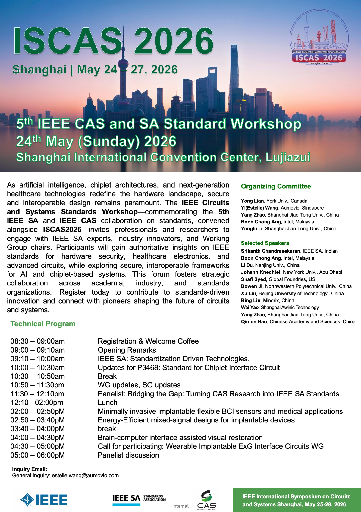

The 5th Jointed Workshop between IEEE Standards Association and IEEE CAS - Secure Circuits and Systems: Standards for AI, Chiplets, and Healthcare
Abstract
As AI acceleration, chiplet architectures, and next-generation healthcare technologies rapidly redefine the hardware landscape, mastering secure, interoperable design has never been more critical. We invite you to the IEEE Circuits and Systems Standards Workshop, co-hosted with the IEEE Standards Association, featuring a distinguished lineup of speakers from the IEEE SA, leading industry innovators, and current Working Group and Study Group chairs. These experts will deliver timely insights into the latest IEEE standards for hardware security, healthcare electronics, and advanced circuits, with a focused mission to elevate standards awareness across the IEEE Circuits and Systems Society. Through dynamic presentations and interactive discussions, you will deepen your understanding of secure, interoperable frameworks tailored for AI and chiplet-based systems, while forging stronger, actionable partnerships between academia, industry, and standards organizations. Your attendance will not only expand your engagement in IEEE CASS initiatives but also position you to directly influence and participate in the global standardization efforts shaping tomorrow's technology. Join us to connect with pioneers, bridge the gap between innovation and compliance, and help architect a more secure, collaborative future for circuits and systems—register today and step into the forefront of standards-driven design.
Agenda
| Time | Topic | Speaker |
|---|---|---|
| 08:30 – 09:00am | Registration & Welcome Coffee | All |
| 09:00 – 09:10am | Opening Remarks | Yi (Estelle) Wang (Global Head of Product Cybersecurity Consulting & Engineering, AUMOVIO) |
| 09:10 – 10:00am | IEEE SA: Standardization Driven Technologies | Sri Chandrasekaran (APAC Foundational Technologies Practice Lead, IEEE SA) |
| 10:00 – 10:30am | IEEE SA PM: Best Practices for IEEE standards development | Christian Orlando IEEE SA PM |
| 10:30 – 10:50am | Break | |
| 10:50 – 11:30pm | WG updates, SG updates | WG Chairs/SG Chair |
| 11:30 – 12:10pm | Panelist: Bridging the Gap: Turning CAS Research into IEEE SA Standards | Shafi Syed (Senior Direction, GF), Sri Chandrasekaran (IEEE SA), WG Chairs, Ang Boon Chong (SASD Chair), Moderator: Yi (Estelle) Wang (Global head of CE, Aumovio) |
| 12:10 - 02:00pm | Lunch | |
| 02:00 – 02:50PM | Minimally invasive implantable flexible BCI sensors and medical applications | Bowen Ji, Professor, Northwestern Polytechnical University |
| 02:50 – 03:40PM | Energy-Efficient mixed-signal designs for implantable devices | Hong Zhang, Professor, Xi'an Jiaotong University |
| 03:40 – 04:00PM | Break | |
| 04:00 – 04:30PM | Brain-computer interface assisted visual restoration | Bing Liu, CEO of Mindrix |
| 04:30 – 05:00PM | Progress update and call for participating: Wearable Implantable ExG Interface Circuits Working Group | Yang Zhao Secretary of CASS/FW-SC/WIExGICWG |
| 05:00 – 06:00 | Panelist discussion |
Downloads
Download Workshop Program (PPTX)
Workshop Poster
